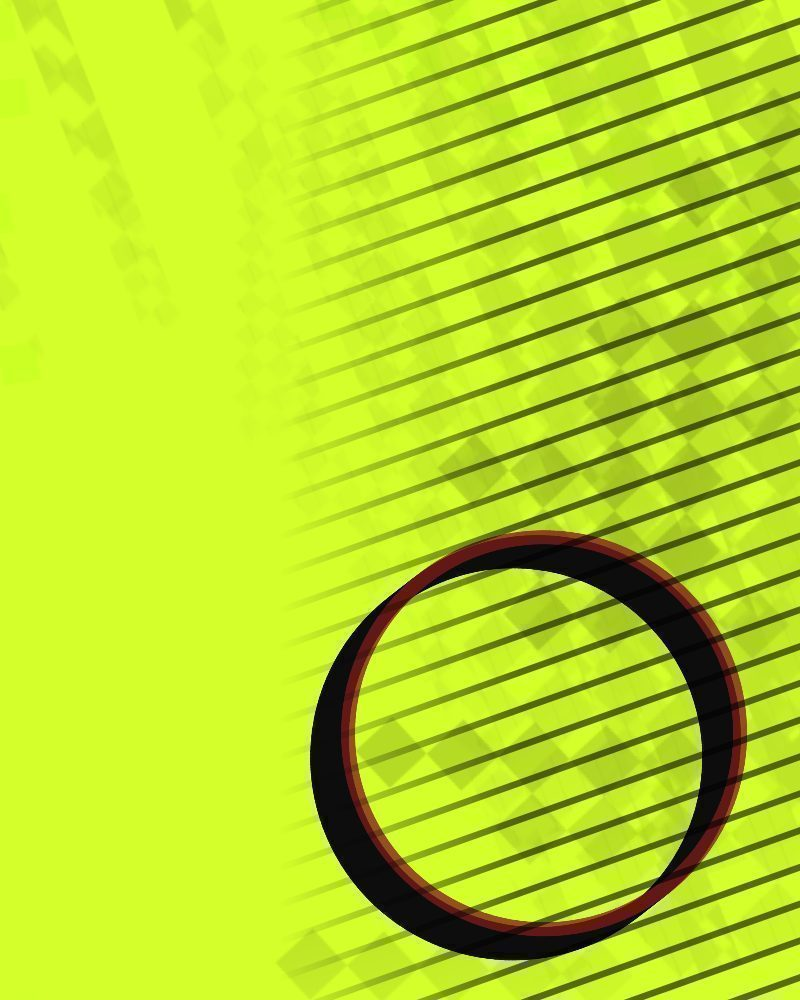
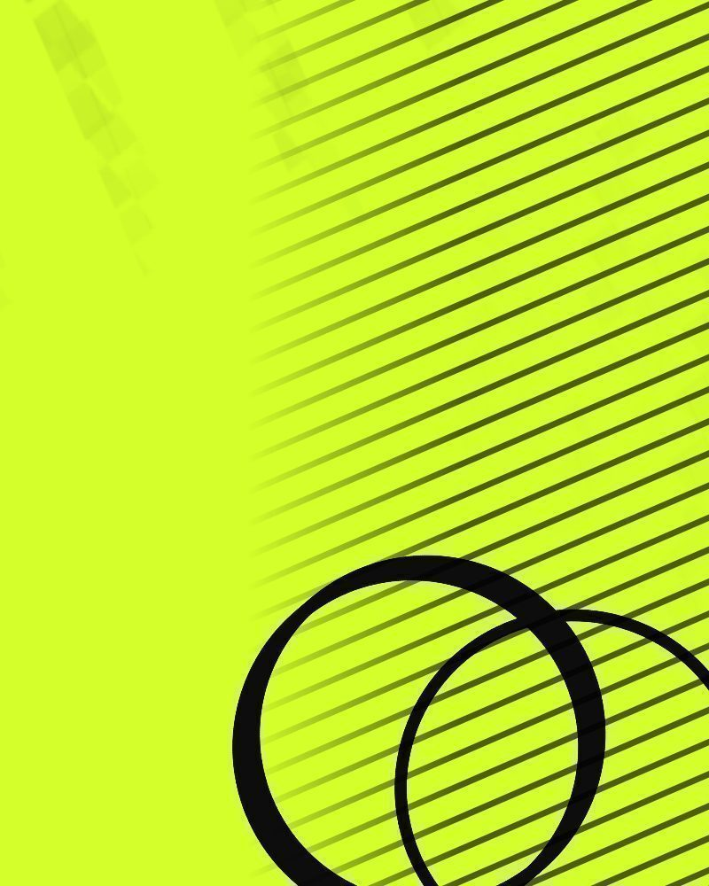

Giorno 175

Villafranca e mulazzo bordo della pioneer
ho letto "Nicomede I"; "ucciso" per me gira a vuoto; ricerca "alcuni" (approfondire): Dove finisce alcuni?; sferzata: colore che urla, contro il tono
Oggi: ucciso. Ho letto "Nicomede I"; "ucciso" per me gira a vuoto; ricerca "alcuni" (approfondire): Dove finisce alcuni?; sferzata: colore che urla, contro il tono.
Da Wikipedia: «contiene immagini».
Ho steso un pattern (2 volte), ripetuto, deforma (2 volte), tagliato, spostato le cose (3 volte), cambiato la luce, messo una forma geometrica, tolto un livello, ombra. Ho annullato 1 gesti dopo averli guardati.
.
Ha retto: Tiene l'intenzione: "ucciso" si vede (centroY, saturazione, contrasto).
È caduto: La mano si ripete: deforma, taglia ancora una volta.
come ne ho discusso con me stesso — la tengo
formale (pro, 1.50): Il baricentro sta su un terzo: la composizione respira. — regge
formale (pro, 1.25): Fuori centro quanto basta: c'è una forza che tira. — regge
occhio (pro, 1.43): Parla soprattutto per punti: una lingua sola, chiara. — regge
occhio (pro, 1.19): Il vuoto (38%) lavora quanto il pieno. — regge
memoria (contro, 0.10): La mano si ripete: deforma, taglia ancora una volta. — cade
intenzione (pro, 1.90): Tiene l'intenzione: "ucciso" si vede (centroY, saturazione, contrasto). — regge
intenzione (pro, 0.71): Viene da: Nicomede I. — regge
coerenza (pro, 1.71): Parla con le tavole di prima su "alcuni": stessa famiglia, un passo più in là. — regge
formale (pro, 1.25): C'è una struttura: una cosa comanda e attorno c'è spazio. — regge
pubblico (pro, 0.98): Si legge: si capisce cosa sto facendo. — regge
materia (pro, 0.90): Ha una pelle: si sente la materia. — regge

Piccolo ucciso disteso
ho letto "Nicomede I"; "ucciso" per me gira a vuoto; ricerca "alcuni" (approfondire): Dove finisce alcuni?; sferzata: colore che urla, contro il tono; serie: varia la tavola precedente
Oggi: ucciso. Ho letto "Nicomede I"; "ucciso" per me gira a vuoto; ricerca "alcuni" (approfondire): Dove finisce alcuni?; sferzata: colore che urla, contro il tono; serie: varia la tavola precedente.
Da Wikipedia: «nicomedia e contribuì al rafforzamento».
Ho steso un pattern (2 volte), ripetuto, deforma (2 volte), tagliato, spostato le cose (4 volte), cambiato la luce, messo una forma geometrica, tolto un livello (4 volte), ombra. Ho annullato 2 gesti dopo averli guardati.
.
Ha retto: Tiene l'intenzione: "ucciso" si vede (centroY, saturazione, contrasto).
È caduto: Tradisce quello che credevo di cercare (30%).
come ne ho discusso con me stesso — la tengo
formale (pro, 1.50): Il baricentro sta su un terzo: la composizione respira. — regge
formale (pro, 1.25): Fuori centro quanto basta: c'è una forza che tira. — regge
occhio (pro, 1.50): Parla soprattutto per superfici: una lingua sola, chiara. — regge
occhio (pro, 1.25): Il vuoto (34%) lavora quanto il pieno. — regge
memoria (contro, 0.10): La mano si ripete: deforma, taglia ancora una volta. — regge
conservatore (contro, 1.70): Tradisce quello che credevo di cercare (30%). — cade
intenzione (pro, 2.00): Tiene l'intenzione: "ucciso" si vede (centroY, saturazione, contrasto). — regge
intenzione (pro, 0.75): Viene da: Nicomede I. — regge
coerenza (pro, 1.75): Parla con le tavole di prima su "alcuni": stessa famiglia, un passo più in là. — regge
formale (pro, 1.25): C'è una struttura: una cosa comanda e attorno c'è spazio. — regge
pubblico (contro, 1.66): Chi la guarda direbbe: "pasticcio". — cade

Ucciso puntiforme
ho letto "Nicomede I"; "ucciso" per me gira a vuoto; ricerca "alcuni" (approfondire): Dove finisce alcuni?; sferzata: colore che urla, contro il tono; serie: varia la tavola precedente
Oggi: ucciso. Ho letto "Nicomede I"; "ucciso" per me gira a vuoto; ricerca "alcuni" (approfondire): Dove finisce alcuni?; sferzata: colore che urla, contro il tono; serie: varia la tavola precedente.
Da Wikipedia: «nicomedia e contribuì».
Ho steso un pattern (2 volte), ripetuto, deforma (2 volte), tagliato, spostato le cose (5 volte), cambiato la luce, messo una forma geometrica (2 volte), tolto un livello (5 volte), ombra, flusso. Ho annullato 1 gesti dopo averli guardati.
.
Ha retto: Tiene l'intenzione: "ucciso" si vede (centroY, saturazione, contrasto).
È caduto: Non mi insegna niente (interesse 38%).
come ne ho discusso con me stesso — la tengo
occhio (pro, 1.50): Parla soprattutto per punti: una lingua sola, chiara. — regge
occhio (pro, 1.00): Le diagonali (49%) mettono tutto in caduta. — regge
memoria (contro, 0.10): La mano si ripete: deforma, taglia ancora una volta. — cade
intenzione (pro, 2.00): Tiene l'intenzione: "ucciso" si vede (centroY, saturazione, contrasto). — regge
intenzione (pro, 0.75): Viene da: Nicomede I. — regge
coerenza (pro, 1.75): Parla con le tavole di prima su "alcuni": stessa famiglia, un passo più in là. — regge
pubblico (pro, 1.00): Si legge: si capisce cosa sto facendo. — regge
distruttore (contro, 1.17): Non mi insegna niente (interesse 38%). — cade
materia (pro, 0.93): Ha una pelle: si sente la materia. — regge